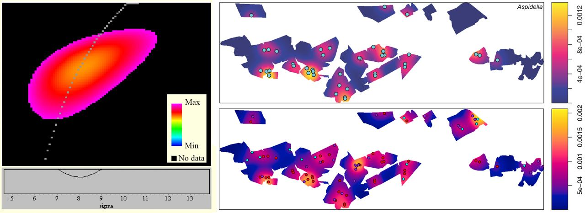
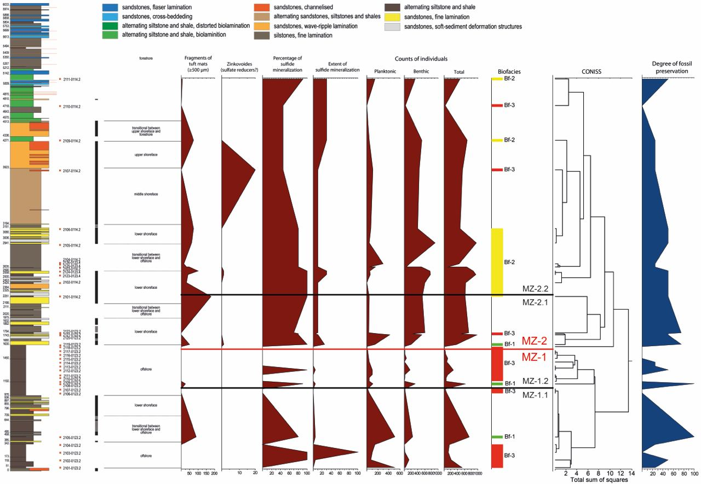
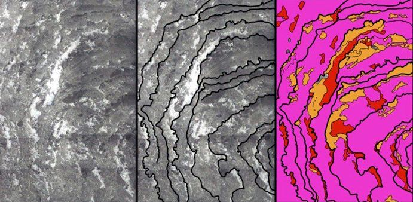
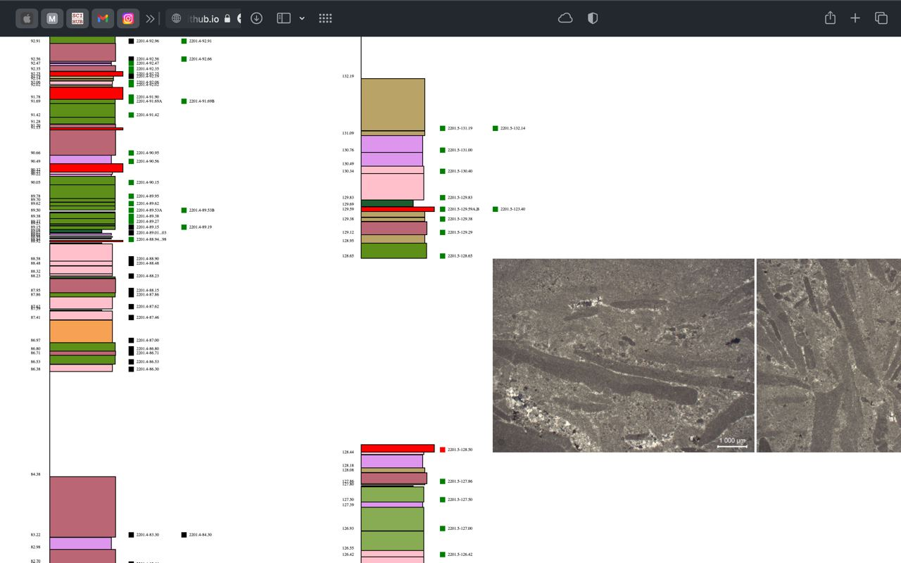
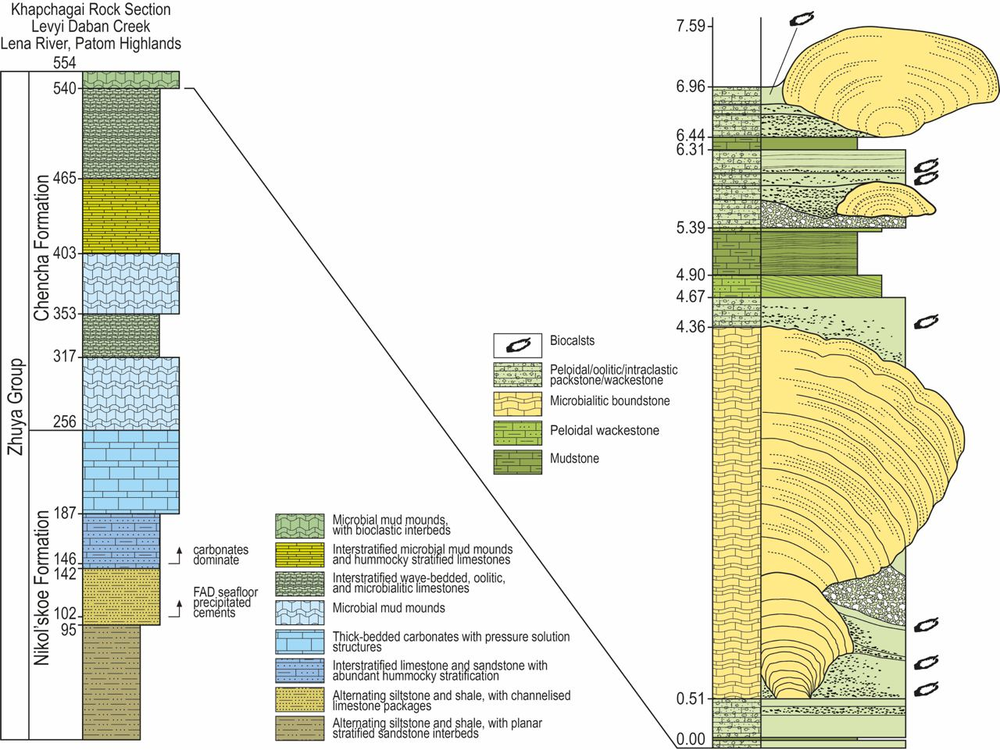
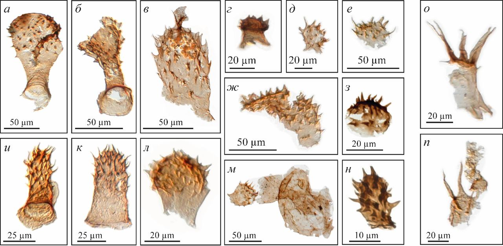
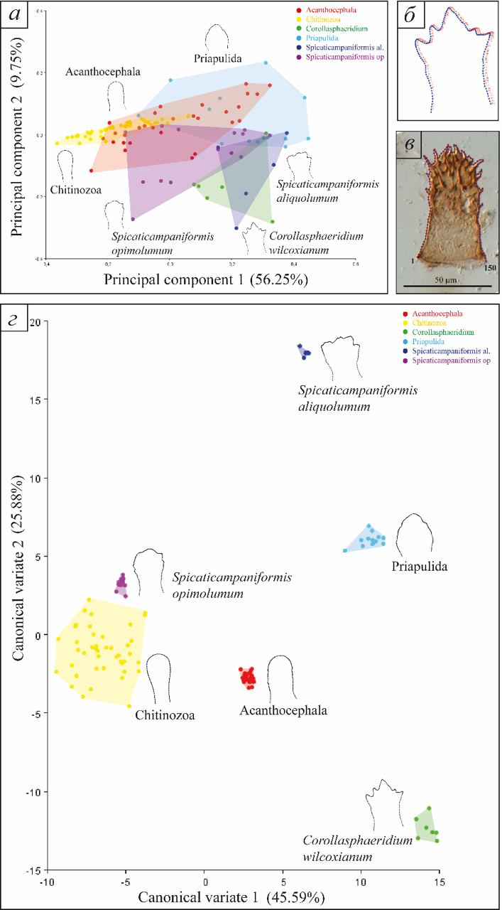
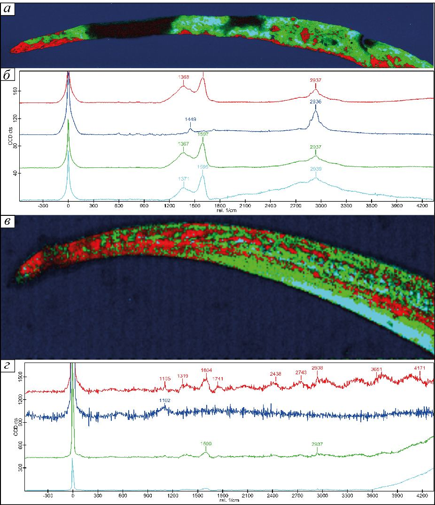

News
11/01/2024 Поздневендские фрондоморфные организмы изучаются вот уже на протяжении 65 лет, при этом предыдущими исследователями предполагалось, что эти организмы имели перовидную архитектуру – это когда пластинчатое тело состоит из сегментов, располагающихся по обе стороны от основного стержня (хорошо видно на фотографии слева). По мнению большинства исследователей, стержень был заполнен плотной тканью по всей его длине, за исключением места сочленения с заякоривающей структурой, где на некоторых реконструкциях располагается короткая полость, иногда заполненная песчаным материалом, как это видно на фотографии в центре – воспроизведенной фиг. 4 табл. I из статьи А.Ю. Иванцова (2016). На этой же фотографии можно заметить неоднородное строение стержня, однако предыдущие исследователи не придавали этому значения.
Изучение ископаемого материала и анализ результатов рентгеновской компьютерной микротомографии ископаемых фрондоморфных организмов из ергинской свиты в разрезе Зимних гор (на фотографии справа; изучение проведено на оборудовании АО «Тестрон», г. Санкт-Петербург) показал, что стержень мог состоять из камер, образованных складками ткани, к рёбрам которых крепились сегменты. Это важное наблюдение означает, что у фрондоморф не было стержня в виде отдельного органа, что принципиально меняет наши представления об анатомии этих организмов. То, что физическая неоднородность среды обитания определяет структуру и функции современных сообществ, давно понятно, но как и когда это происходит до сих пор не ясно. На примере трансекты, заложенной через ориктоценоз ергинской свиты в обнажении Зимних гор, нами был проведен бивариантный анализ пространственного распределения характеристик субстрата (заякоривающих структур, дисковидных структур, палеопасцихнид). По результатам анализов было выявлено, что заякоривающие структуры Aspidella, Mawsonites и “Charniodiscus” в парах с другими элементами субстрата проявляют неярко выраженную агрегацию. Более того, SPTC (bivariate Thomas process with shared parents) указывает на то, что кластеры Aspidella и дисковидных структур (Cyclomedusa, Ediacaria) на поверхности субстрата распределены вокруг общих кластерных центров. Из этого можно заключить, что экологические факторы, отвечающие за распределение этих двух типов структур, были практически идентичны.
То, что физическая неоднородность среды обитания определяет структуру и функции современных сообществ, давно понятно, но как и когда это происходит до сих пор не ясно. На примере трансекты, заложенной через ориктоценоз ергинской свиты в обнажении Зимних гор, нами был проведен бивариантный анализ пространственного распределения характеристик субстрата (заякоривающих структур, дисковидных структур, палеопасцихнид). По результатам анализов было выявлено, что заякоривающие структуры Aspidella, Mawsonites и “Charniodiscus” в парах с другими элементами субстрата проявляют неярко выраженную агрегацию. Более того, SPTC (bivariate Thomas process with shared parents) указывает на то, что кластеры Aspidella и дисковидных структур (Cyclomedusa, Ediacaria) на поверхности субстрата распределены вокруг общих кластерных центров. Из этого можно заключить, что экологические факторы, отвечающие за распределение этих двух типов структур, были практически идентичны.
11/01/2024 Слева: график пространства моделируемых параметров, отображающий расхождение между бивариантной парной корреляционной функцией для пары Aspidella/Cyclomedusa (данные отображены серой пунктирной линией) и моделируемым процессом Томаса (SPTC; данные отображены спектральной областью). Под графиком – проекция минимального участка спектральной области на ось sigma определяет приблизительный радиус усредненного кластера (r = 2σ); таким образом, радиус усредненного кластера равняется 16.4 см. Справа: карта ядерной оценки плотности (Kernel density estimation) для заякоривающих структур Aspidella (сверху) и для Aspidella+Cyclomedusa+Ediacaria (снизу). Цветом указана интенсивность, т.е. вероятное количество точек на единицу площади. Говоря простым языком, у нас получилось составить первую карту неоднородностей поверхности субстрата, на котором обитали мягкотелые организмы.
11/01/2024 Исчезновение ископаемых остатков мягкотелых макроорганизмов в геологической летописи венда может быть следствием вымирания биоты, ее экологического вытеснения более конкурентноспособными организмами, либо изменения тафономических условий. Для того, чтобы установить возможные причины исчезновения ископаемых мягкотелых организмов в ергинской свите в разрезах Зимних гор (юго-восточное Беломорье), мы проанализировали сохранность уплощённых органостенных микроостатков (в том числе степень дезинтеграции, сульфидной минерализации), а также вариации количества мацерата и таксономического состава ориктоценозов (в том числе вариации по разрезу остатков бентосных и планктонных групп микроорганизмов, дерновин, сульфатредуцирующих бактерий рода Zinkovioides) используя метод кластерного анализа и сопоставили полученные результаты с условиями осадконакопления.
Оказалось, что уровень исчезновения ископаемых мягкотелых макроорганизмов совпадает с основной границей смены биофаций в разрезе, выявленной по ископаемым остаткам микроорганизмов. Причины исчезновения мягкотелых организмов явно носят тафономический характер.
В 1979 году Владимир Андреевич Комар предложил строить систематику строматолитов на основе микроструктуры слойков по двум категориям признаков: для выделения типов использовать морфологию основных элементов микроструктуры (сгустки, комки, каналы, волокна, и т.д.), а для выделения групп – характер распределения этих структурных элементов в теле строматолита (беспорядочно рассеяны, расположены в один ряд, и т.п.). Разработка систематики на основе микроструктуры не была доведена до конца, и мы решили продолжить работу в этом направлении, используя принципы, методы и подходы микрофациального анализа Эрика Флюгеля.
11/01/2024 Исследования управляются гипотезой, согласно которой постройки, сложенные микритом с пелоидной микроструктурой, являются обызвествленными губками – по современным представлениям, пелоидная структура представляет собой продукт обызвествления микробиальных матов или насыщенного бактериями полисахаридного матрикса, к которому относится мезохил губок. В качестве объекта выбраны строматолиты Linella ukka Krylov, 1967 типа Massulatida. На иллюстрации приведены предварительные результаты микрофациального картирования одной из построек, где розовым цветом показаны переходная микрит-микроспаритовая ассоциация (здесь еще предстоит поработать), жёлтым – пелоидный микрит, красным – спарит.
Микробиалиты венда Олёкмо-Чарского нагорья изучаются нами с целью проверки гипотезы о ведущей роли процессов обызвествления полисахаридной матрицы в формировании построек. В 2022 г. было проведено рекогносцировочное изучение дикимдинской, сералахской и порохтахской свит по р. Олёкме – это один из наименее изученных разрезов пограничных отложений венда и кембрия, хотя и является типовым для «юдомского» (IV) комплекса микрофитолитов и немакит-далдынского региояруса Сибирской платформы (Журавлева, 1964).
11/01/2024 В 2023 г. в цифровом формате построено 10 разрезов, составляющих сводный разрез мощностью 219 м. Цифровой архив хранится в облачном хостинге репозиториев Git и доступен по ссылке. На снимке с экрана приведён фрагмент архива, демонстрирующий расчленение разрезов на литотипы (всего 15), привязанную к разрезам коллекцию геологических образцов (395 шт), изготовленные шлифы для последующего изучения методом поляризационной оптической микроскопии и геохимическими методами. К образцам привязаны ссылки на фотографии шлифов, которые открываются при подведении курсора к соответствующему образцу (на снимке с экрана открыты ссылки на шлиф к образцу 2201.5-128.50).
Наиболее вероятные кандидаты на роль ископаемых остатков губок выявлены в разрезе жуинской серии в ск. Хапчагай Уринского поднятия Патомского нагорья в среднем течении р. Лены. Ранее здесь на периферии крупных куполовидных построек, слагающих верхнюю часть разрезов ченчинской свиты, нами были обнаружены массовые скопления биокластов, которые стали объектом пристального изучения (1) методом поляризационной оптической микроскопии в шлифах, сделанных в различных плоскостях; (2) методом химического препарирования в буферном растворе уксусной кислоты; (3) методом сканирующей электронной микроскопии; (4) по цифровым объемным реконструкциям, полученным по результатам рентгеновской компьютерной микротомографии. Биокласты представляют собой фрагменты изначально мягкотелых организмов, сохранившиеся в известняковом матриксе объёмно благодаря обызвествлению и пиритизации мягких тканей.
11/01/2024 Нам удалось показать широкое распространение биокластов в разрезе, что позволяет предполагать активное участие организмов в строении биоседиментационных построек. Возраст этих организмов моложе 574 млн лет, но древнее 565 млн лет, что удалось установить благодаря совместному нахождению в разрезе с крупным отрицательным экскурсом на кривой вариаций изотопного состава углерода в карбонатах – событием Shuram.
На северо-западном склоне Оленекского поднятия Сибирской платформы, в чускунской свите томмотского возраста ведется изучение лагерштатта, содержащего древнейшую в мире ископаемую необызвествленную биоту типа «Burgess Shale». В 2023 году объектом исследований стали загадочные мелкие органостенные остатки булавовидной формы. Ранее похожие микрофоссилии были описаны в составе рода Corollasphaeridium Martin in Dean et Martin, 1982. Нами была проведена ревизия этого таксона с использованием геометрическо-морфометрического анализа. Был выделен новый род Spicaticampanoformis gen. nov., в состав которого вошли чускунские представители, а также таксоны, ранее описанные в составе рода Corollasphaeridium из нижнего кембрия Австралии как Corollasphaeridium opimolumum и C. aliquolumum.
11/01/2024 На иллюстрации – представители рода Spicaticampaniformis gen. nov. с Сибирской платформы: а–н – Spicaticampaniformis opimolumum (Zhang in Gravestock et al., 2001) comb. nov; о, п – Spicaticampaniformis cf. S. aliquolumum (Zhang in Gravestock et al., 2001) comb. nov.
Таксон Spicaticampanoformis демонстрирует высокий уровень морфологической изменчивости и сравнивается нами с хоботоком (пробостусом) скребней, который за счет нагнетания жидкости также способен сильно менять свою форму. Таксон Corollasphaeridium сравнивается с интровертом (глоткой) приапулид, который имеет окологлоточные склериты, схожие по расположению с выростами Corollasphaeridium wilcoxianum. Сравнение было проведено по результатам сравнительно-анатомического и геометрическо-морфометрического анализов.
11/01/2024 Расположение групп организмов: а – график по принципиальным компонентам; б – контур объекта (Corollasphaeridium wilcoxianum) и расположение равноудаленных реперных точек с 1 по 150; в – пример кривой, описывающей форму объекта (Spicaticampaniformis opimolumum), отмечены первая и последняя реперные точки; г – график по каноническому анализу. Черным цветом рядом с каждым полем показана общая форма для каждой выборки.
Методом рамановской спектроскопии были проанализированы площадное распределение фаз и дифференциация состава органического вещества в микрофоссилиях (шипах возможных представителей щетинкочелюстных, склеритах приапулид, колбочковидных остатках) из чускунской свиты, выявлено разнородное строение органической стенки микрофоссилий (наблюдается несколько пиков, обусловленных разным содержанием длинных углеродных цепочек). С целью установления возможной природы наблюдаемых особенностей строения, нами методом рамановской спектроскопии были изучены скалиды современных представителей приапулид, щетинки многощетинковых червей, шипы щетинкочелюстных, радула моллюсков и хоботки скребней.
11/01/2024 Результаты, полученные по шипам современных щетинкочелюстных, оказались наиболее интересными, так как выявили неоднородности в распределении органического вещества, схожие с таковыми возможных кембрийских аналогов. Полученные результаты позволяют уверенно предполагать присутствие стволовых представителей Chaetognatha в раннем кембрии. На иллюстрации приведены спектры с площадным распределением фаз и диаграммы спектров: а – распределение спектров для Protoherzina compressa из нижнего кембрия; б – усредненные кривые; в – распределение спектров для шипа современного щетинкочелюстного организма Sagitta elegans; г – усредненные кривые.
Исследования по проекту ведутся в международной коллаборации с Мэрилендским университетом (США). Не имея возможности выступить на крупном международном геологическом форуме GSA Connects 2023. Geological Society of America Annual Meeting (Pittsburgh, PA, USA, 15–18.10.2023), мы попросили наших зарубежных коллег представить полученные совместными усилиями научные результаты, таким образом обеспечив достойную видимость РНФ и проводимых при поддержке фонда исследований.
REDOX CONDITIONS OF TERMINAL EDIACARAN AND EARLY CAMBRIAN LAGERSTÄTTEN IN RUSSIA
THE CRYOGENIAN EMERGENCE OF SPONGE-GRADE ANIMALS AND THEIR ENVIRONMENTAL CONSEQUENCES
INVERSE COUPLING OF CARBON AND URANIUM ISOTOPE ANOMALIES IN NEOPROTEROZOIC CARBONATES OF SIBERIA
3D RECONSTRUCTIONS OF AN EDIACARAN SPONGE-GRADE ANIMAL FROM THE PATOM UPLIFT OF SIBERIA
RECONSTRUCTING THE LI ISOTOPIC COMPOSITION OF TERMINAL EDIACARAN SEAWATER
About
Organisms, events and phenomena leading to, or being the consequence of the Cambrian “explosion”
Groups
People
Grazhdankin D.V.
grazhdankindv@ipgg.sbrasRogov V.I.
rogovvi@ipgg.sbrasAleksandrov D.O.
aleksandrovdo@ipgg.sbrasMel'nik D.S.
melnikds@ipgg.sbrasMaksimenko V.O.
maksimenkovo@ipgg.sbrasPolivkin G.F.
polivkingf@ipgg.sbrasBobkov N.I.
bobkovni@ipgg.sbrasSozonov N.G.
sozonovng@ipgg.sbrasDantes O.V.
dantesov@ipgg.sbrasDesyatkin V.D.
desyatkinvd@ipgg.sbrasVasil'yev A.E.
vasilyevae@ipgg.sbrasPozdnyakov M.G.
pozdnyakovmg@ipgg.sbras